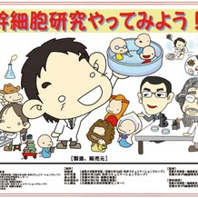
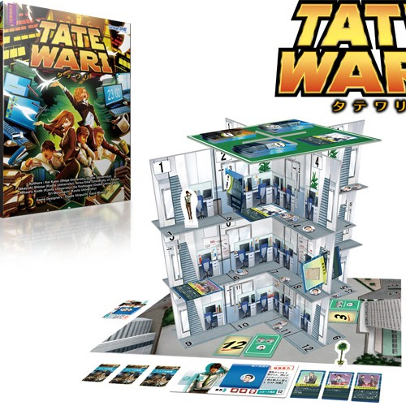
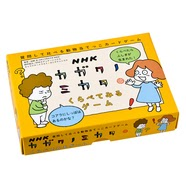

どんなゲーム？
プレイヤーは若手研究者となり、多能性を持つ「プルリポテントくん」を、神経細胞や赤血球などへ育てます。サイコロやカードによって研究が進みますが、思い通りにならない出来事も起こります。
ゲーム教材
加納研究室が開発に関わった三つのゲーム教材を紹介します。購入・在庫・利用条件は変更されることがあるため、最新情報は各公式ページでご確認ください。


プレイヤーは若手研究者となり、多能性を持つ「プルリポテントくん」を、神経細胞や赤血球などへ育てます。サイコロやカードによって研究が進みますが、思い通りにならない出来事も起こります。

参加者は、異なる部署や役割に分かれ、それぞれが一部の情報だけを持ちます。目の前の立体的な課題を解くには、情報を言葉にし、相手の情報を聴き、組織全体で共有しなければなりません。

身近な対象について質問カードを使い、比べる、数える、並べる、分ける、予想するなど、さまざまな「ミカタ」を試します。知識量ではなく、問いをつくり、違いを説明することが中心です。
ゲームベース学習、会話分析、学習科学、組織研究、デザイン、アクセシビリティ、国際比較に関する博士研究、JSPS申請、共同研究を歓迎します。研究対象となる参加者への説明、同意、データ管理を含む計画を提案してください。